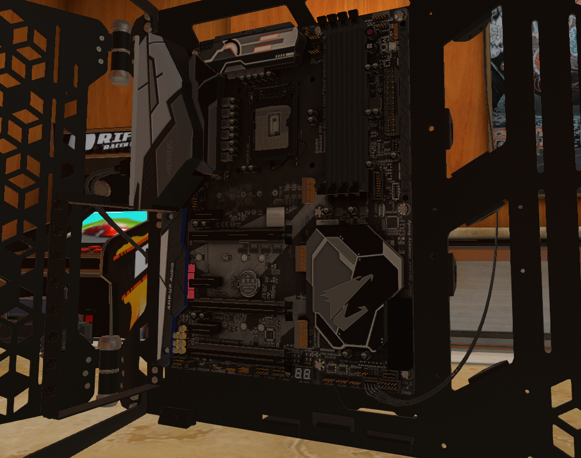

Apellée Motherboard en anglais, la carte mère est le composant principal d'un ordinateur.
C'est elle qui relie tout les composants et qui s'en occupe : Alimentation, processeur, mémoire...etc Physiquement tout d'abord,
car elle est vissée au boîtier de votre PC, de plus elle possède les connecteurs (slots) pour accueillir des dizaines de composants et périphériques.
Au niveau logiciel ensuite, car chaque information envoyée ou reçue par le matériel ou un programme passe forcément par elle.
C'est aussi sur une petite partie de la carte mère que se trouve la ROM sur laquelle est enregistrée le BIOS,
petit programme gérant la configuration "de base" du matériel et se chargeant de faire le lien avec votre système d'exploitation (Windows, Linux...).
Ces réglages sont conservés en mémoire même en l'absence de courant grâce au CMOS, alimenté par la pile de carte mère;
| Source | *Image provenant du jeu "PC Building Simulator". |